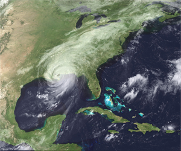

Click on a category to learn some hurricane survival tips!
Pre-Season Preparation

- Always have proper tools, supplies, and a first aid kit.
- Always keep a flashlight and batteries in case the power goes out.
- Have canned foods on hand.
- If you live near the coast, research hurricane evacuation routes.
- Keep a battery-powered radio to listen for news if the power goes out.
Hurricane Watch/Warning
- A hurricane watch is an announcement that hurricane conditions are possible within a specified area. These are usually issued 48 hours in advance of the anticipated onset of tropical storm force winds.
- A hurricane warning is an announcement that hurricane conditions are expected within the specified area. Usually issued 36 hours in advance.
- When a watch or warning is issued, consider leaving low-lying areas.
- Protect windows with plywood boards or storm shutters.
- Secure outside objects.
- Have several days worth of food and water on hand.
- If you receive a call to evacuate, do so immediately.
Before the Storm
- Check in with local weather reports regularly.
- Have storm shutters in place or board up your house.
- Find a window-less, secure room to hide in for the storm's duration.
- Make sure your food, water, tools, supplies, and first-aid kit are all ready.
During the Storm
- Stay in your secure room.
- Avoid windows
- Avoid using wired electronics, unless an emergency.
- Monitor weather reports on the radio.
- If you're in the middle of a hurricane, and there is a sudden calm in the storm, don't venture outside. This is merely the eye of the storm, and the hurricane will resume once it passes over.
After the Storm
- Before venturing outside after a hurricane, make sure the storm is definitely over, everything has settled down, and you know you're not just in the calm associated with the hurricane's eye.
- Use stored water and food until you are given the o.k. to do otherwise.
- Avoid downed power lines like the plague, and if you spot any, report them.